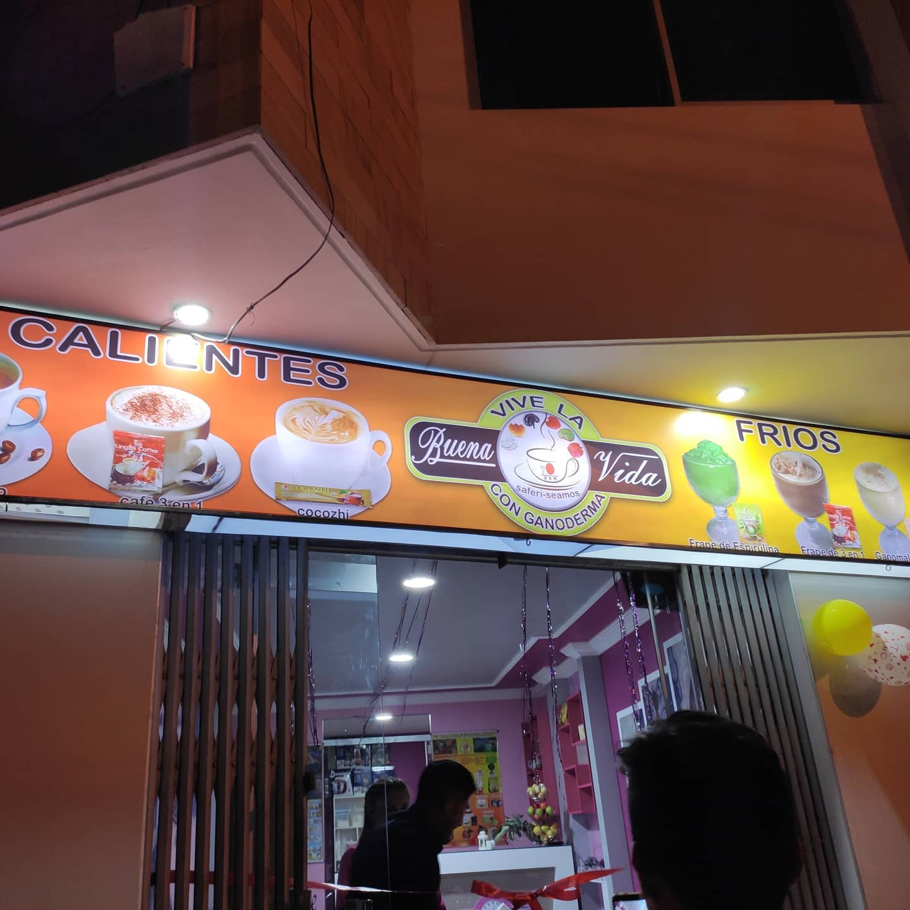

Mi nombre completo es Denys Alexader Mamani Ramirez, tengo 23 años; naci y creci en Sucre, sali bachiller del cologio Junín
Me encanta la música, los deportes y la gimnasia eh llegado a representar a mi colegio en varias
ocaciones siempre eh sido participativo y muy sociable, logre formar un grupo musical en la tenia
por nombre "Rumay" llegamos a obtener varias presentaciones
Decidi estudiar la carrera de Ingenieria en Ciencias de la Computación debido
aque me gusta bastante el tema de la tecnoligia, las computadoras, los celulares y la creación de paginas web
A día de hoy, ademas de estudiar la carrera, tambien me dedico a hacer negocios y estudiar la educación financiera
decidi ir por el camino del emprendedor logrando algunos negocios como ser la creación de
mi primera cafeteria "VIVE LA BUENA VIDA"

Tambien otro ejemplo, cree la pagina de "AMP Bolivia" en la cual realizo ventas de artículos tecnologicos
y accesorios para celular; los productos los suelo exportar desde China principalmente